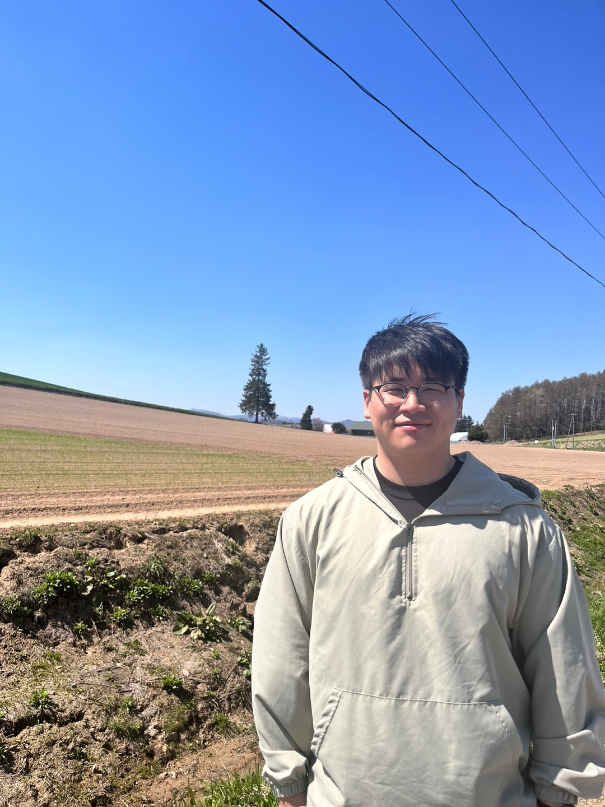

<div class="row flex-ms-reverse flex-row py-2">
    <div class="col-md-12 col-sm-12" id="bio">
        
        <h1>Junwoon Lee</h1>
        <p style="text-align:left; font-size:1.3rem">
            Ph.D. Candidate in Robotics <br/> University of Michigan
        </p>
        <p style="text-align:left; font-size:1.1rem">
             <em target="_blank" href="mailto: leejunwoon@robot.t.u-tokyo.ac.jp">junwoon@umich.edu</em>
        </p>
        <p class="text-justify"></p>
        </p>    

        <p style="text-align:left; font-size:1.1rem">
            <a target="_blank" href="images/cv.pdf">CV</a> &nbsp;/&nbsp;
            <a href="https://scholar.google.com/citations?user=g65vfS4AAAAJ&hl=en">Google Scholar</a> &nbsp;/&nbsp;
            <a href="https://www.linkedin.com/in/junwoon-lee/">LinkedIn </a>
        </p>
    </div>
    <div class="col-md-12 col-sm-12">
        <p class="text-justify">
            <p class="tt" id="tt">
            <ul>
                <li><strong>Research interests</strong> : Spatial Intelligence, Neural Representation, Multi-Agent Systems, Field Robotics</li>
            </ul>
            </p>
        </p>
        

        <p class="tt" id="tt">
            I am pursuing a Ph.D. in Robotics at the 
            <a target="_blank" href="https://umich.edu" style="color: #1f77b4;"><strong>University of Michigan</strong></a>, 
            supervised by <a target="_blank" href="https://www.tianyulun.com" style="color: #1f77b4;">Prof. Yulun Tian</a>.

            I received my Master's degree in Human and Engineered Environmental Studies from the 
            <a target="_blank" href="https://www.u-tokyo.ac.jp/en/index.html" style="color: #1f77b4;"><strong>University of Tokyo</strong></a> 
            with top distinction, supervised by 
            <a target="_blank" href="https://www.robot.t.u-tokyo.ac.jp/~yamashita/" style="color: #1f77b4;">Prof. Atsushi Yamashita</a>. 
            My research focused on LiDAR-visual-inertial and thermal-inertial SLAM, in collaboration with 
            <a target="_blank" href="https://www.kubota.com" style="color: #1f77b4;">Kubota Corporation</a>.

            Previously, I received my Bachelor's degree in Mechanical Engineering from the 
            <a target="_blank" href="https://www.osaka-u.ac.jp/en" style="color: #1f77b4;"><strong>University of Osaka</strong></a>, 
            where I was supervised by Prof. Masamitsu Kurisu. 
            My research focused on a 3D mapping system for mining sites using a LiDAR-camera system, 
            in collaboration with <a target="_blank" href="https://www.komatsu.com/en/" style="color: #1f77b4;">Komatsu Ltd.</a>
        </p>


        

    </div>
</div>

{% include publications.html %}
{% include honors.html %}
{% include miscellaneous.html %}